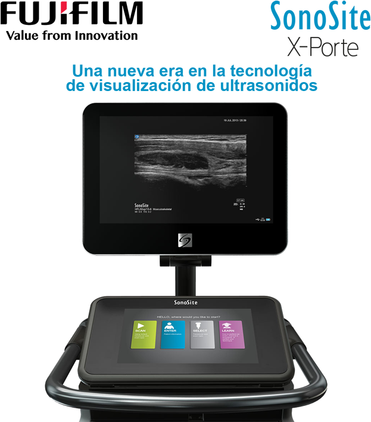

Sonosite X-porte
Una mirada y la diferencia es clara

Registro Sanitario: 1871E2014 SSA
DESCRIPCIÓN:
X-PORTE representa una nueva visión de la ecografía clínica. Sus imágenes, funciones y recursos educativos se integran a la perfección en un práctico diseño.
Con un movimiento de la mano obtendrá una respuesta inteligente y rápida a las necesidades de procesamiento de imágenes. Sabrá que fue diseñado para profesionales como usted. Su panel de control autoexplicativo simplifica la navegación por el sistema y su pantalla táctil hermética evita los botones para impedir la presencia de patógenos.
Especificaciones del Sistema:
- Dimensiones de la base: 26.4” L x 21.2” W.
- Altura de la base: máximo 64“ (monitor hacia arriba)/mínimo 42.2” (monitor hacia abajo).
- Ajuste de altura: 9”.
- Pantalla táctil de 12.1”.
- Sistema de arranque: < 20 segundos.
- Monitor HD: 19” en diagonal.
- Panel de control con ajuste de inclinación: 0-110 grados.
- Rango dinámico: hasta 183 dB.
- Escala de grises: 256 niveles.
CARACTERÍSTICAS:
Funciones de obtención de imagen avanzada que ofrecen una calidad de imagen excepcional con su tecnología de Imagen de Definición Extrema (XDI).
Resistencia a los líquidos para facilitar la limpieza y desinfección.
Menos de 20 segundos desde el arranque del sistema.
Modelos personalizados para aplicaciones en el punto de cuidado del paciente.
Diseñado para superar las especificaciones de durabilidad del ejército estadounidense.
Garantía de 5 años líder en el sector.
Extensos programas de capacitación y educación.
• DVR (Digital Video Recorder).
• Conector de transductor triple.
• Canasta de almacenamiento.
DATOS COMPLEMENTARIOS: En FUJIFILM de México queremos convertirnos en su mejor aliado, es por eso que estamos comprometidos con nuestros clientes y ofrecemos el mejor servicio posventa.
FUJIFILM DE MÉXICO, S.A. de C.V.
Teléfono: (55) 5263-5500
e-mail: ultrasonido@fujifilm.com.mx
www.fujifilm.com.mx